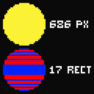
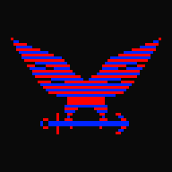
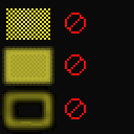
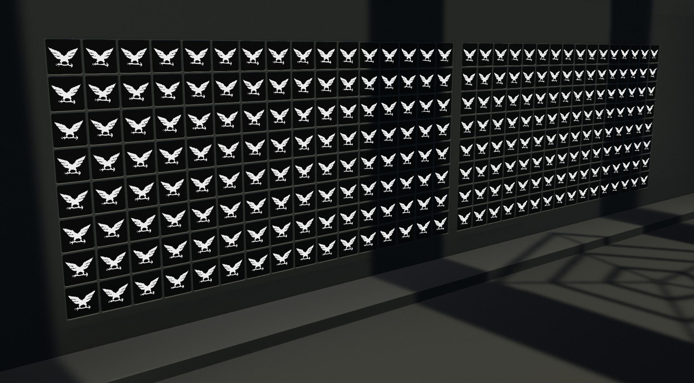

Image to Lua converter:
This tool works by transforming your image into rectangles.
Simply upload your image, click on the buttons to copy the script to your clipboard, and paste in Stormworks.
For multiple scripts, connect a few Lua-blocks in any order.
Colors are modified in order to look better in the game. Thanks to XLjedi's color correction function.
How does it work?
In a normal image format, raw pixel data is stored for each pixel individually, each carries its own RGBA values.
The yellow circle below has a total of 686 pixels. 2744 different values in total.
Our tool transforms that data into rectangles to save on space and performance. How does it do that?
First, it will separate the image into colors and for each of them, it will find rectangles.
Each color carries its RGBA values, followed by every rectangle of the same color, stored in just 4 values each [x,y,width,height]
In the example below, we transform 686 pixels into just 17 rectangles.

Another example, a bit more complex:

Please note that our images are Pixel Art, solid colors with simple shapes.
Because of the way our tool and Stormworks screens work, some images are not suited for conversion:
Images with anti-aliasing, a huge number of colors, or individual pixels, should be avoided.
And we must have in mind the resolution of Stormworks screens. From 32x32 to 288x160.
Here are some examples of what not to do:

This images have too many colors, or too many shapes. Anti-aliased images are not recomended, although they may still work.
Finally, we can render to more than a hundred screens without affecting the game's performance, depending on the image.

Hopefully this tool can be of use to you. Thank you for using it!
Mr Lennyn
Errors:
Color String Error - Your image is too complex:
At least one color from your image has too many shapes, which means it can't fit in a script.
You need to modify your image or split those shapes into multiple colors.
For programmers:
Data is stored in a table that looks like this: p[color index][value index]
p = { {r,g,b,a,x1,y1,w1,h1,x2,y2,w2,h2...} , {r,g,b,a,x1,y1,w1,h1...} }
Each color is stored as a table, the first 4 values are r,g,b,a, followed by the x,y,w,h of each rectangle of the same color